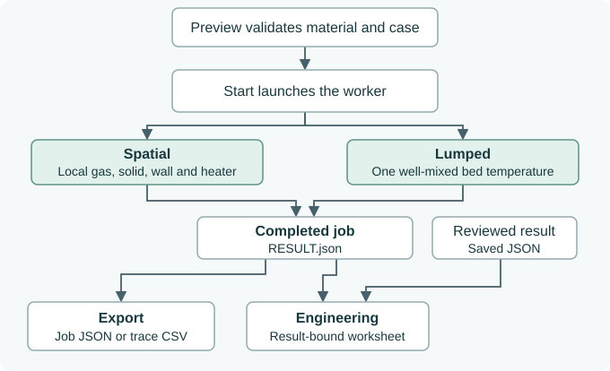

This directory is a complete working project. Its app and solver do not need the surrounding research archive.
Read Using the DAC model for the user workflow. This page maps that workflow to the code.
Follow one calculation
Start with Reviewed Lewatit (65% RH, 48 h) under
Comparison presets. The table follows the working app
from that button to a result. Python paths below are relative to
model/. The physics reference derives the balances and
material laws.

| Stage | What calls what | Data passed or saved |
|---|---|---|
| Launch and material selection | run.py serve calls app.server.main.
build_server installs the concurrent screening manager.
Browser function loadMaterial in
app/mof_screening/static/app.js requests
/api/mof-screening/materials/<id>.
routes.get calls
contract.load_builtin_material. |
A selectable material JSON with its units, equilibrium family,
source and operating limits. Case presets come from
config/mof_screening/defaults.json. |
| Preview | app.js: previewCase reads the form and posts the
material and case to /api/mof-screening/preview.
routes.post calls manager.preview, which calls
contract.build_case and
contract.preview_payload. |
The server validates the material, case and their compatibility, computes their hashes and saves a preview ID. Editing an input invalidates the browser preview. No time integration occurs. |
| Start | app.js: startJob posts that preview ID to
/api/mof-screening/start.
ConcurrentMofScreeningManager.start in
parallel_manager.py checks readiness and executable
identity, consumes the preview and calls
launch_worker. |
A job ID, input_material.json,
input_case.json and STATE.json in the job
directory. The independent worker reads these saved inputs. |
| Choose the engine | process_worker.execute_job calls
MofScreeningManager._run_job in manager.py. It
dispatches on case.engine to
runtime.run_spatial or runtime.run_lumped.
Both build the material adapter and load the weather window. |
Normalized material, operating case, initial state, weather, solver controls and progress/cancellation callbacks. The representation is chosen once for the job. |
| Spatial calculation | run_spatial builds the geometry and half-bed, then
calls spatial.one_cycle. It constructs
spatial.cycle_rhs for each phase and passes the resulting
derivative function to SciPy. At each evaluation the local gas state
supplies partial pressures, and the material adapter supplies rates and
energy derivatives. |
Gas moles, site loadings, gas and solid temperatures, wall and heater temperatures, and boundary meters. Accepted states are sampled for traces and phase endpoints. |
| Lumped calculation | run_lumped calls
lumped_port.weather_driver.run_weather_session. Its
core_closure calls
lumped_port.engine.run_cycle(rhs_only=True) to obtain phase
derivatives. The weather driver invokes solve_ivp with
those derivatives. |
One well-mixed bed state, phase/weather boundaries, integrated meters and a checkpoint. The weather driver owns the integration loop. |
| Monitor and finish | app.js: pollJob reads job status. Worker callbacks
update progress during integration. Both runtime branches call
evaluation.annotate_result. On success
manager._run_job writes RESULT.json and marks
the job completed. |
Completion, material support, target attainment, numerical diagnostics and conservation are separate fields. Interrupted jobs retain available diagnostics. |
| Read or export | routes.get dispatches a job's
/export?format=json or /export?format=csv
request to manager.export. For a reviewed result,
/api/result?result=reviewed:<name> reads the indexed
saved file. |
JSON retains inputs, states, traces, metrics and source identities. The job CSV contains sampled traces. A trace sample is distinct from an integrated product or energy meter. |
| Engineering | app.server.Handler sends the selected result ID to
engineering.calculate. It calls load_result,
read_worksheet and assess.
engineering.save binds the worksheet to the result SHA-256
and checks its revision. |
reviewed:<name> selects a hash-checked archived
result and job:<id> selects a completed local run.
Unpriced components stay unknown. Opening or pricing a worksheet does
not start a simulation. |
Trace a reported number
For the humid Lewatit example,
case.weather.relative_humidity = 0.65 becomes inlet water
partial pressure in weather.WeatherHour. In the spatial
derivative, the local water partial pressure sets the
water uptake target; stored water then changes the CO₂ target.
material.rates returns the gas species sink, and withdrawal
during the collection portions feeds the product meter.
runtime.run_spatial combines the symmetry-scaled meter
increments across the 48-hour horizon. The saved
metrics.collected_CO2_kg is 5.140642 kg. Results and
Engineering report its daily equivalent of 2.570321 kg/day. This chain
can be checked against the saved export and
the worked
mass and electricity calculation.
For a new case, edit the equipment, weather or phase settings. For a
material of an existing equilibrium family, follow its JSON inputs into
materials.build_material_adapter. When reviewing a
genuinely new constitutive law, check its equilibrium target,
directional rates, map from storage sites to gas species and energy
derivatives together. The 3D DAC setup follows a
separate path through docs/assets/geometry/ and
docs/data/. The default replay reads
lewatit_humid_cycle.json, extracted from the reviewed humid
Lewatit export by tools/build_lewatit_replay.py. Three dry
cases use process_saved_cycles_v1.json. Add
run reads a local completed job or a native result JSON through
add-run.js. native-result.mjs maps the saved
phase records and bed states into cycle-relative samples for the same
playback controls. Browser storage keeps the compact replay.
Follow a steam, Purolite or aging result
For a direct-steam case, the spatial runtime uses the axial wet-bed
calculation in screening/mof_screening/direct_steam.py.
Read its steam inlet, free-liquid, drain and generator meters alongside
the outlet product. The indirect steam jacket transfers heat across the
wall and keeps steam outside the bed. Heat-source
equations and accounting
The Purolite record is
materials/screening/purolite_a110_humid.json. Its
equilibrium family selects
screening/mof_screening/purolite.py, which computes a water
loading, a humidity-conditioned CO₂ target and both rates. For the
equal-mass comparison, the CSV identifies the exact case
and solver shared by the two runs.
Bed aging reads four fixed-capacity runs through
docs/assets/ui/bed-aging.js. The page maps cycle count or
measured capacity to capture and electricity. There is no time-evolving
degradation state in the cycle solver.
Files and directories
| Location | Purpose |
|---|---|
model/run.py |
Portable app launch and environment check |
model/launcher.py, START.cmd,
STOP.cmd |
Windows launch, ownership checks and shutdown |
model/app/server.py, engineering.py |
Local pages, reviewed results and result-bound engineering |
model/app/mof_screening/ |
Material, case, preview and simulation interface |
model/screening/mof_screening/ |
Current material laws, spatial engine, lumped companion and run management |
model/screening/ |
Shared geometry, airflow, heat, pressure, pump and water functions |
model/materials/screening/ |
Material packages and normalized weather |
model/materials/screening/source_evidence/ |
Exact dry inputs required to verify saved sensitivity packages |
model/config/mof_screening/ |
Defaults, spatial settings, limits and execution identity |
model/equipment/ |
Pump reference data |
docs/data/submission/ |
Reviewed exports, audits, summary tables and source evidence |
model/report/project/ |
Main report, equations, evidence, user guide and PDF |
docs/assets/geometry/ |
3D viewer and saved cycle playback |
model/tests/, tests/ |
Current numerical, application and viewer checks |
tools/ |
Installation, report rendering, result audit and release packaging |
Why supporting files remain
The .qmd and Markdown files are editable documentation
sources; their HTML and PDF outputs let reviewers read them without a
renderer. JSON exports preserve the full calculation, while CSV tables
provide summaries or traces. Tests and their fixtures reproduce specific
numerical and application behavior; repeated case inputs inside distinct
fixture jobs preserve each test's recorded context.
The license, third-party notices, dependency lock, source identities
and release manifest support sharing and verification. The
.venv/ environment, Python caches and
model/outputs/ are local runtime files and are excluded
from the review ZIP and Git. They are not additional model versions.
New jobs and cost worksheets go under model/outputs/,
which is local and excluded from the repository. The 3D replay uses
illustrative equipment geometry and saved simulation output.
Saved result identities are preserved. The small source snapshot
under docs/data/submission/solver_source/ documents the
numerical extension used by certain reviewed sensitivities; it is
evidence, not another runnable app.
The material selector is defined in
model/config/mof_screening/defaults.json. It includes
exploratory scenarios, dry parent laws and synthetic examples. Each case
records the exact material package. Historical source-path strings
inside saved provenance identify original evidence. The standalone tests
resolve the required tables and fixtures locally.